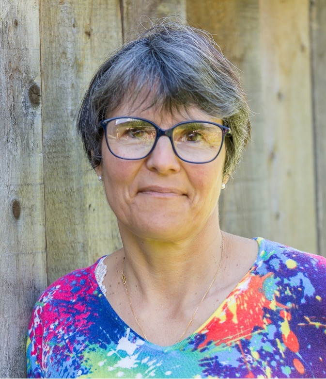
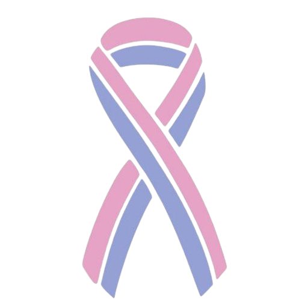

ACCOMPAGNEMENT APRÈS UN DEUIL : VOUS N'AVEZ PAS À OUBLIER POUR RECOMMENCER À VIVRE
J'accompagne les femmes qui, après un deuil qui a profondément marqué leur vie, veulent retrouver leur voie et se réautoriser à vivre. Un accompagnement humain et structuré pour vous aider à retrouver ce qui vous ressemble, remettre de l'envie, des projets et de la couleur dans votre vie, à votre rythme.
Et si vous pouviez retrouver une vie qui vous ressemble
Un espace pour déposer vos mots, accueillir vos émotions, et retrouver peu à peu votre chemin
Perdre quelqu'un que l'on aime profondément est une épreuve qui fait basculer une vie. Que ce soit un enfant, un conjoint, un frère, une sœur, un parent ou un ami proche, le deuil bouleverse nos repères, notre identité, notre façon de voir le monde... et parfois même la personne que nous pensions être.
Le deuil, ce n'est pas seulement de la tristesse. C'est aussi parfois de la colère, de la culpabilité, de la confusion, de la fatigue, du brouillard mental. Des moments où l'on ne se reconnaît plus et où l'on ne sait plus comment avancer.
Et puis, avec le temps, la peine s'apaise. On pleure moins. On reprend le quotidien. On travaille, on s'occupe des autres, on avance. En apparence, la vie a repris son cours. Mais à l'intérieur, quelque chose a changé.
Comme un puzzle dont l'image aurait disparu : certaines pièces sont encore là, d'autres semblent avoir disparu, certaines ne s'emboîtent plus comme avant. Et surtout, vous ne savez plus très bien quelle image vous êtes censée reconstruire. C'est parfois ce qui se passe après un deuil qui a profondément marqué une vie.
Vous avez peut-être continué à avancer parce qu'il le fallait. Être là pour vos proches, prendre soin de votre famille, travailler, faire face au quotidien. Et sans même vous en rendre compte, vous vous êtes peut-être mise en arrière-plan. Vos envies, vos projets, vos rêves, votre légèreté ont été mis de côté.
Pourtant, vous n'avez pas à choisir entre continuer à aimer la personne qui vous manque et avoir envie de vivre. Il ne s'agit pas de revenir à la vie d'avant : elle n'existe plus. Il ne s'agit pas non plus d'oublier, de tourner la page ou de faire disparaître l'absence. Il s'agit de trouver votre nouvelle façon de vivre avec.
Petit à petit, vous pouvez remettre certaines pièces à leur place, en découvrir de nouvelles, retrouver vos repères, vos envies, vos ressources... et peut-être même vous surprendre. Car il reste la vie : des projets, des rencontres, des envies, des éclats de rire, de la légèreté, et même un peu de folie. La vie peut reprendre de la couleur sans que l'amour, lui, disparaisse.
C'est ce chemin que je vous propose de vous aider à parcourir : un accompagnement du deuil pour vous retrouver, vous réapproprier votre vie et vous réautoriser à vivre, à votre rythme, avec ce qui a changé, avec ce qui reste... mais aussi avec tout ce qu'il reste à créer.
Et si vous vous autorisiez à imaginer la suite ?
Mon histoire, mon engagement
Un parcours de vie qui donne du sens à mon accompagnement

Je m'appelle Nadine, j'ai 53 ans, maman de deux grands enfants et d'une étoile.
En 2003, la perte de notre fille aînée, survenue la veille de sa naissance, a bouleversé mon existence. J'ai connu la douleur, l'absence, la culpabilité... et ce sentiment de ne plus vraiment savoir comment avancer dans une vie qui avait changé.
Mais au fil des années, j'ai aussi découvert qu'un deuil ne nous condamne pas à rester figée dans ce qui a été. Il est possible de se reconstruire, de retrouver ses ressources, de faire de nouveaux projets et de redonner une place à la joie, sans pour autant oublier celui ou celle qui nous manque.
Pour moi, ce chemin a été long. Il a pris des détours et m'a parfois amenée là où je ne pensais pas aller. Un accompagnement en coaching a notamment changé mon regard sur les choses et m'a permis, pas à pas, de réinvestir ma vie.
Aujourd'hui, je peux dire que je vis pleinement. Je savoure les moments partagés avec ma famille, je porte de nouveaux projets et j'ai trouvé une façon d'intégrer l'absence de ma fille à mon histoire, sans qu'elle prenne toute la place.
Le deuil fait partie de mon histoire. Et cette histoire m'a aussi appris combien la vie peut être riche en couleurs.
Après plus de 20 ans à piloter la qualité et la sécurité au service de 300 collaborateurs, j'ai choisi de mettre mon expérience, mon écoute et mon énergie au service de l'accompagnement. Je suis également engagée comme écoutante au sein d'une association de deuil périnatal et j'ai consacré l'année 2025 à me former à l'accompagnement, pour acquérir des outils et des méthodes qui viennent compléter mon expérience personnelle et professionnelle.

Mon engagement associatif me permet d'être au contact de femmes et de familles confrontées à cette réalité particulière, d'écouter leur vécu et de mieux comprendre la diversité de leurs besoins. Cette connaissance particulière du deuil périnatal me permet aujourd'hui de proposer un accompagnement respectueux aux femmes qui traversent la perte d'un bébé, que cette perte soit récente ou ancienne, survenue pendant la grossesse, quel que soit le nombre de semaines, autour de la naissance ou dans les premiers temps de la vie.
Aujourd'hui, j'ai à cœur d'offrir un espace où l'on peut déposer ce qui est là, mais aussi regarder vers ce qui est encore possible.
Avec douceur, authenticité et simplicité, je vous accompagne pour avancer à votre rythme
et retrouver votre propre chemin.
Mes formations
Coach professionnelle certifiée
Certification RNCP N° 37799
Accompagner les périodes de transitions
Certification RNCP N° 3482
AIT
Technique d'intégration émotionnelle avancée
Secouriste en Santé Mentale
Formation certifiante (PSSM)
Naître et Vivre
Accompagnement en Deuil Périnatal (Niveau 1)
Référent Deuil
Association Empreintes
Mon accompagnement, Votre chemin
Cet accompagnement propose un espace sécurisé, sans jugement, pour déposer ce que vous traversez, retrouver des repères et reconstruire peu à peu une vie où la personne disparue prend sa juste place dans votre histoire.
| Victor Hugo"Tu n'étais plus là
Où tu étais,
Mais tu es partout
Là où je suis."
« Vivre avec » | Retrouver sa voie et se réautoriser à vivre même avec l'absence
Ce que cet accompagnement peut vous apporter :
- Des outils concrets pour reconstruire votre quotidien et retrouver vos repères.
- Un apaisement progressif de l'intensité émotionnelle.
- La possibilité de créer une place douce et juste pour la personne disparue dans votre histoire.
- La reconnexion à vos envies, vos projets, votre énergie de vie.
- Le sentiment, pas à pas, de vous réapproprier votre vie.
Ce que comprend l'accompagnement « Vivre avec » :
- 10 séances individuelles d'environ 1 h
- Un lien WhatsApp entre les séances pour les moments difficiles
- En distanciel via Zoom, à votre rythme sur 6 mois
Parcours type :
À titre indicatif, nous co-créons ensemble votre parcours pour retrouver votre chemin
Mouvement 1 :
Déposer ce qui est là
Un espace pour déposer ce que vous vivez, avec vos mots, vos émotions, vos questions... et vos silences aussi.
Nous revenons sur votre histoire et sur ce que le deuil a bouleversé, pour comprendre où vous en êtes aujourd'hui.
Mouvement 2 :
Comprendre et retrouver vos appuis
Nous explorons ce qui vous retient parfois : culpabilité, injonctions, peur d'aller mieux, loyautés envers la personne disparue.
Et nous cherchons ce qui est encore là : vos forces, vos ressources, vos appuis.
Mouvement 3 :
Se retrouver
Nous prenons le temps de renouer avec ce qui fait votre singularité : vos valeurs, vos besoins, vos envies, vos qualités et vos forces.
Il ne s'agit pas de redevenir celle que vous étiez avant, mais de retrouver un lien plus vrai avec la femme que vous êtes devenue.
Mouvement 4 :
Remettre de la couleur dans votre vie
Pas pour tourner la page ni effacer ce qui a été, mais pour vous permettre de reprendre votre place dans votre propre vie.
Nous faisons le point sur le chemin parcouru et préparons la suite, avec cette nouvelle réalité qui est la vôtre.
Désireuse de soutenir au mieux les femmes confrontées à un deuil, je suis à la recherche de partenariats avec la MSA, des mutuelles ou des entreprises. Mon souhait est de proposer un accompagnement sur mesure, combinant un suivi individuel à la possibilité de rejoindre un groupe de parole. Compte tenu de ma connaissance approfondie du monde de l'entreprise, je peux également réaliser des coachings professionnels pour accompagner les femmes dans leur retour au travail après un deuil.
Cadre éthique et limites
Cet accompagnement n'est pas une thérapie et ne remplace pas un suivi médical ou psychologique. Il s’inscrit dans une logique de soutien et de reconstruction du quotidien. Je ne traite pas les troubles psychiatriques (dépression sévère, PTSD). Si une souffrance intense apparaît, je vous oriente vers un professionnel de santé.
Prête à faire le premier pas ?
- Réservez votre appel découverte gratuit.
- Nous fixons le rythme et la date de démarrage.
- Signature de l'accord et premier paiement mensuel.
Vos questions, Mes réponses
Mon accompagnement s'adresse aux femmes qui ont vécu un deuil qui a profondément marqué leur vie : la perte d'un enfant, d'un conjoint, d'un frère ou d'une sœur, d'un parent, d'un ami proche. Quel que soit le type de deuil, ce qui nous réunit ici, c'est le sentiment que la vie a basculé et le besoin de retrouver sa voie. Je tiens à préciser, avec respect et honnêteté, que je ne suis pas médecin ni psychiatre. Mon accompagnement s'inscrit dans une logique de soutien et de reconstruction, et non de soin thérapeutique.
C'est LA question : s'engager dans un accompagnement implique d'ouvrir son espace intime à quelqu'un d'autre, d'oser sortir de sa zone de confort, se confronter à ses émotions. Je mets un point d'honneur à vous offrir un cadre bienveillant, confidentiel et sécurisant, où chaque émotion, chaque ressenti ont leur place sans jugement. Vous pouvez vous exprimer librement, que vos pensées soient claires ou encore floues, assumées ou non. C'est la raison pour laquelle je vous invite à un premier échange gratuit sur Zoom, afin de discuter ensemble et de voir, en toute simplicité, si mon accompagnement répond à vos besoins et peut véritablement vous aider.
Bien sûr. Il n'y a pas de délai pour cheminer dans son deuil. C'est la puissance du lien qui fait le deuil. Que votre perte soit récente ou qu'elle remonte à de nombreuses années, il n'est jamais trop tard pour se tourner vers un accompagnement. Un deuil se traverse, il n'y a pas de début ni de fin, juste des étapes à franchir. Chacun avance à son rythme et il est important d'accueillir chaque étape avec bienveillance, quel que soit le moment où elle s'exprime.
Dans le cadre de cet accompagnement, il ne s'agit pas de remonter à la source de votre douleur ni d'explorer votre passé ou votre enfance. Ensemble, nous portons notre attention sur ce que vous vivez aujourd'hui et sur la manière de vous projeter vers l'avenir. L'objectif est de vous offrir des outils concrets, adaptés à votre histoire, pour vous soutenir avec douceur et authenticité.
Oui, j'anime également des cafés deuil virtuels, des temps d'échange en groupe, gratuits et bienveillants, pour partager avec d'autres personnes qui vivent des expériences similaires. J'anime aussi des groupes de parole en local. Le groupe offre un espace complémentaire à l'accompagnement individuel : il permet de se sentir moins seule et de puiser dans la force collective. Ces temps sont annoncés sur mon blog et sur LinkedIn.